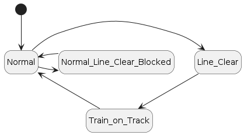

|
CANBlock
1.0a
Module Documentation
|
|
CANBlock
1.0a
Module Documentation
|
This repository contains firmware for the Raspberry PICO to build a CBUS based signalling block instrument.
For correct operation, two CBUSBlock modules are normally required and used as a pair, however it is also possible to use a CBUSBlock in conjuction with another CBUS module (e.g. a CANMIO).
One of the CANBlock modules will control and indicate the state of the local signal box block, the other will indicate the state of the block to the signal box in rear.
The design of the CANBlock is fairly generic, but it has been designed to operate as closely as possible as a SR Three-Wire, Three-Position instrument operating on an open block section. See this article for more information: Southern Region block
The firmware was developed for operating a model, where for the particular prototype location, the commutator of the block instrument is locked if the distant signal of the block being entered is Off, or to put it another way, the distant signal must be On before 'Line Clear' can be indicated on the block instrument.
Without mechanical, or at least electro-mechanical locking of the commutator, it is not possible to physically prevent a user from selecting 'Line Clear' with simple switch inputs. Instead CANBlock uses "soft" interlocking, preventing selection of 'Line Clear' should a specified event be set ON(ACON), indicating (for example) a particular signal or signals are pulled Off.
With this in mind, the block section being controlled by CANBlock can be in one of four different states:
Transistion between the above states is managed in CANBlock by a state machine:

CANBlock monitors three GPIO inputs for switching between the different states. It is intented that these are connected to a three-way rotary switch, as a mimic of the commutator in a real instrument.
These switch inputs are configured by the firmware as inputs with internal pull-up, with the expectation that the switches connect the input pin to GND.
The CANBlock state machine monitors the three switch inputs for falling edge transistions, i.e. the input pin changing logic state from high (1) to low (0). For each falling edge transition, the local block will transmit a CBUS event to the remote CANBlock (box in rear), based on transistions of the state machine and switch positons:
| Pin pulled Low | CBUS Event sent |
|---|---|
| Line Clear Switch | EV6 |
| Train on Track Switch | EV7 |
| Normal Switch | EV8 |
These events need to be taught to the remote CANBlock via FCU or JMRI. Each event of CANBlock support a single Event Variable, this variable needs to be set to indicate the type of event being received as follows:
| CBUS Event received | Event Variable[0] value |
|---|---|
| EV6 | 1 (Line Clear Req) |
| EV7 | 2 (Train on Track Req) |
| EV8 | 3 (Block Cleared Req) |
In response, the receiving (remote) CANBlock module will evaulate the incoming event agaist the state of its internal state machine, and determine if the requested state change can be actioned. If accepted, the remote box will indicate the new state on its own LEDs ACK and will then transmit a CBUS event to the original box as an ACK. Specifically for a Line Clear request, if that is blocked because of the "soft" interlock on the "commutator", the remote CANBlock will send a 'Line Clear Blocked' notification instead of a 'Line Clear' ACK.
The events sent by the remote box are therefore:
| New State | CBUS Event sent |
|---|---|
| Line Clear Blocked (NACK) | EV0 |
| Line Clear ACK | EV1 |
| Train on Track ACK | EV2 |
| Normal ACK | EV3 |
These events should be taught to the block in rear, as acknowledgement of the requested state changes.
| CBUS Event received | Event Variable[0] value |
|---|---|
| Line Clear Blocked (NACK) EV0 | 0 |
| Line Clear ACK EV1 | 6 |
| Train on Track ACK EV2 | 7 |
| Normal ACK EV3 | 8 |
By design, CANBlock modules work as pairs, however it is also possible to use a CANBlock with a CANMIO.
The advantage of using a CANMIO is it is possible to indicate the block state by a servo, which can drive a "needle" of an analgue display, much like real block instruments, instead of the LED's used by CANBlock.
A CANMIO with the Universal firmware using the MULTI output type can drive a servo to up to four different positions, allowing a servo to indicate the three different block states (Normal, Line Clear, Train on Track).
As an example, a CANMIO output channel can be configured as MULTI where:
The "request" events produced by one CANBlock can be taught to the CANMIO to drive the servo to the ATx positions indicated above.
| CBUS Event received | CANMIO Action [EV2] |
|---|---|
| EV6 | AT1 |
| EV7 | AT2 |
| EV8 | AT3 |
The CANMIO can then be configured to generate feedback events for when the servo reaches the requested position. As the CANMIO does not have default events for MULTI outputs, these need to be configured by teaching the CANMIO short events, and setting the relevant "happening" event in EV1. The CANMIO will then generate feedback events. In summary:
| CBUS Short Event | CANMIO Happening [EV1] |
|---|---|
| Line Clear | AT1 |
| Train on Track | AT2 |
| Normal | AT3 |
These feedback events can then be taught to a CANBlock:
| CBUS Event received | Event Variable[0] value |
|---|---|
| AT1 | 6 |
| AT2 | 7 |
| AT3 | 8 |
The pin mapping used by CANBlock is follows.
| Pin | Function | / | Pin | Function |
|---|---|---|---|---|
| 1 | GP0 Free (Reserved I2C SDA) | 40 | VBUS | |
| 2 | GP0 Free (Reserved I2C SDL) | 39 | VSYS | |
| 3 | GND | 38 | GND | |
| 4 | GP2 Buzzer Output | 37 | 3V3_EN | |
| 5 | GP3 Bell Output | 36 | 3V3 | |
| 6 | GP4 Train on Track Remote LED | 35 | ADC_VREF | |
| 7 | GP5 Train on Track Local LED | 34 | GP28 (Reserved ADC3) | |
| 8 | GND | 33 | GND | |
| 9 | GP6 Normal Remote LED | 32 | GP27 (Reserved ADC2) | |
| 10 | GP7 Normal Local LED | 31 | GP26 (Reserved ADC1) | |
| 11 | GP8 Line Clear Remote LED | 30 | RUN | |
| 12 | GP9 Line Clear Local LED | 29 | GP22 Line Clear Blocked LED | |
| 13 | GND | 28 | GND | |
| 14 | GP10 (Reserved SPI SCLK) | 27 | GP21 FLiM Green LED | |
| 15 | CAN RX | 26 | GP20 FLiM Yellow LED | |
| 16 | CAN TX | 25 | GP19 | |
| 17 | GP13 (Reserved SPI CS) | 24 | GP18 Bell Push Button | |
| 18 | GND | 23 | GND | |
| 19 | GP14 Line Clear Switch | 22 | GP17 FLiM Push Button | |
| 20 | GP15 Normal Switch | 21 | GP16 Train on Track Switch |
CANBlock uses the soft PIO based CAN2040 CAN controller, so no external CAN controller is required, however a CAN2562 transceiver or similar MUST be connected to the Pico in order to communicate on CAN.